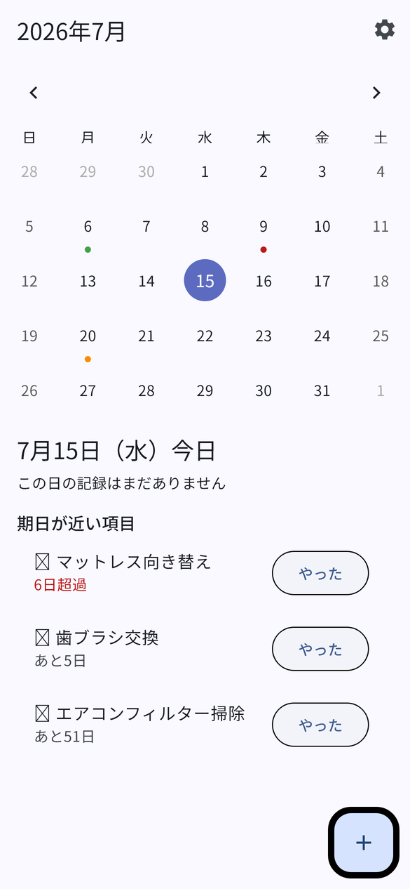
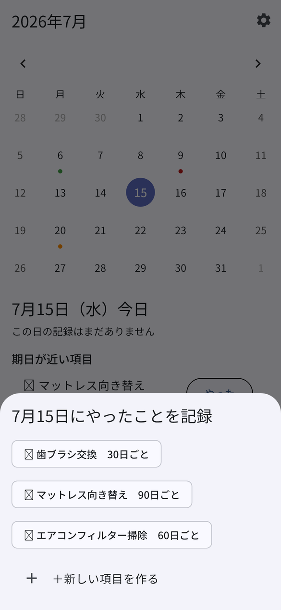
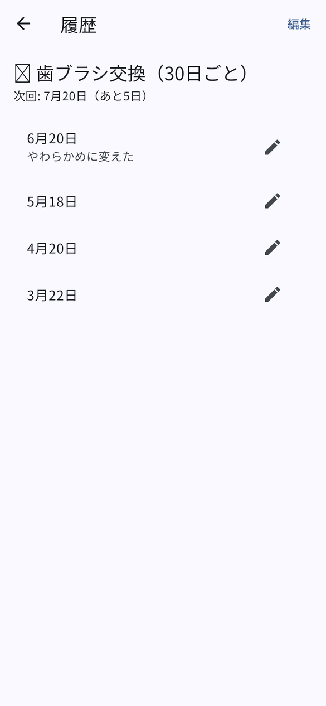

Mobile App
つきいち管理
「月一など低頻度で、忘れがちな生活タスク」を、カレンダーから記録するだけで次回の期日と通知を管理するiOSアプリです。
概要
歯ブラシの交換やマットレスの向き替えのように、周期が長くて忘れがちな用事を扱うためのアプリです。記録は「やった」をワンタッチで押すだけ。次回いつやればいいかを覚えておく必要も、手帳やメモアプリに書き写す必要もありません。
次回の期日はデータベースに保存せず、「前回の実施日 + 間隔日数」として記録のたびに計算し直します。記録が一件もない項目は、登録日を起点に期日を出します。ネットワーク通信は行わず、すべてのデータは端末内のSQLiteに保存されます。
主な機能
- カレンダー主役のホーム画面 — 日付をタップすると選択日パネルに切り替わり、その日の記録一覧とアクティブな全項目の期日状況が表示されます。
- ワンタッチ記録と取り消し — リストの「やった」をタップするだけで記録。直後に出るバーから5秒以内なら元に戻せます。
- 過去日付での記録・履歴の修正 — 過去の日付をタップして後から記録したり、履歴画面から日付の修正・メモの追加・削除ができます。
- 期日当日に1回だけの通知 — 毎日の再通知はしません。通知時刻は設定画面で変更できます（既定09:00）。
- アプリアイコンのバッジ — 今日時点で期限切れの項目数を表示し、記録・修正・削除のたびに再計算します。
- 完全オフライン — ネットワーク通信なし。データは端末内のSQLite（drift）にのみ保存されます。
画面
-

ホーム。カレンダーのドットで期日の状況が分かる -

記録シート。項目を選ぶだけで記録できる -

項目別の履歴。日付やメモを後から直せる
画面は開発中のビルドを撮影したものです。実際の表示は変更される場合があります。